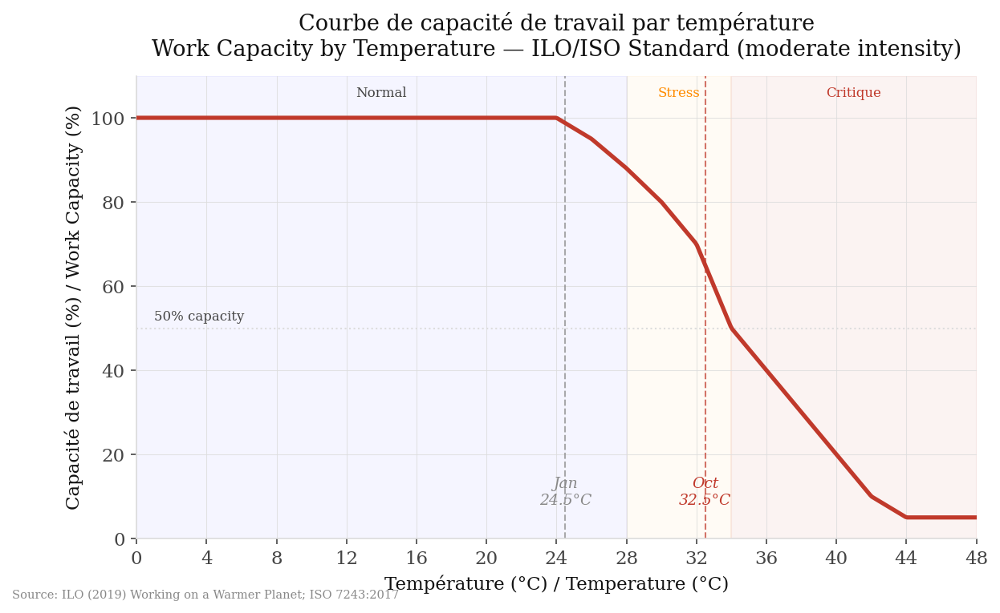

01 — La Courbe / The Curve
Ce n'est pas une opinion. C'est la norme internationale de stress thermique occupationnel — OIT (2019) + ISO 7243:2017. Nous l'avons appliquée à six ans de données horaires pour Nouakchott.

Capacité de travail (%) par température — OIT (2019) + ISO 7243:2017, intensité modérée. Vendeurs de marché, maçons, dockers. / Work capacity (%) by temperature — moderate intensity.
Seuil critique
33°C
point d'inflexion — la capacité chute
À 34°C
50%
de capacité — soit la moitié
Température moy. Oct.
32,5°C
pire mois — 37,8% de compression
La courbe de capacité de travail par température n'est pas une invention de cette analyse. Elle vient du rapport OIT Working on a Warmer Planet (2019) et de la norme ISO 7243:2017 — les standards internationaux de stress thermique au travail, utilisés par les gouvernements, les employeurs et les chercheurs du monde entier.
Nous l'appliquons à intensité modérée — 200 à 300 watts de taux métabolique. C'est le niveau représentatif d'un vendeur debout derrière son étal, d'un maçon qui monte des parpaings, ou d'un docker qui décharge des caisses. Ni bureau climatisé, ni travail de force extrême. Le milieu de Nouakchott.
En dessous de 24°C, la capacité est à 100%. La chaleur ne coûte rien. Au-dessus de 33°C, la courbe plonge rapidement. À 34°C, un travailleur ne peut produire que la moitié de ce qu'il produirait dans des conditions normales. À 40°C, il tourne à 20%.
La courbe point par point
| Température | Capacité | Ce que ça veut dire | |
|---|---|---|---|
| ≤ 24°C | 100% | Capacité pleine. Pas de perte. | |
| 26°C | 95% | Perte marginale. | |
| 28°C | 88% | Légère fatigue. Le travail ralentit. | |
| 30°C | 80% | Un cinquième de la capacité perdu. | |
| 32°C | 70% | Stress thermique marqué. | |
| 34°C | 50% | La moitié. Point de bascule. | |
| 36°C | 40% | Danger réel. Risque de coup de chaleur. | |
| 38°C | 30% | Travail sévèrement compromis. | |
| 40°C | 20% | Quasiment impossible de travailler. | |
| ≥ 42°C | 10% | Seuil plancher. Arrêt de fait. |
Le mois le plus dur n'est pas juillet. C'est octobre.
Le harmattan — le vent sec du Sahara — modère les températures en juillet. Octobre n'a pas cette chance. La chaleur humide s'installe, les températures moyennes atteignent 32,5°C, et la compression grimpe à 37,8%. Presque deux fois plus que janvier.
Ce résultat contredit l'intuition. La plupart des gens supposent que juillet est le pire mois. Les données disent octobre. C'est pour ça qu'on mesure.
Trois professions, une courbe
Compression comportementale
Vendeurs de marché
Marché Capitale, Marché 5ème. Debout toute la journée. Pas de climatisation. La chaleur dicte le rythme.
Compression physique
Maçons et journaliers
Construction, manutention, travaux publics. Effort physique soutenu sous le soleil direct. La courbe s'applique au sens strict.
Compression financière
Commerces de l'Avenue Nasser
Boutiques, ateliers, petits bureaux. Ceux qui peuvent se payer la clim survivent. Les autres ferment ou ralentissent.